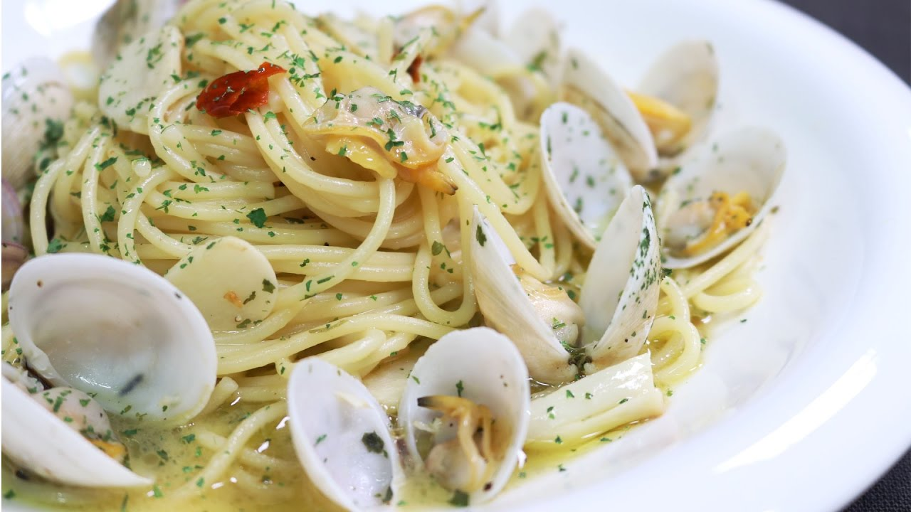
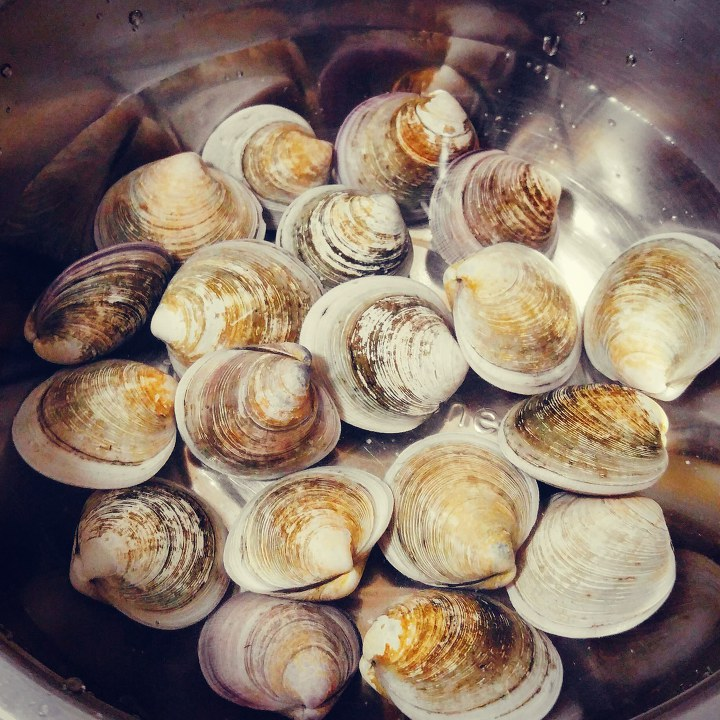

봉골레 파스타
봉골레 파스타는 캄파니아주와 로마 등 중부 이탈리아에서 vongola verace라고 하는 조개를 써서 만든 파스타 이며 맑은 맛이 대표적입니다.
(재료)
올리브 오일 30g
다진 마늘
양파 4/1개
어패류 해산물
소금
후추
화이트 와인
면
파슬리
청양고추
조리법
파스타는 국물이 상대적으로 적기 때문에 불조절이 중요하고 안전에 유념하세요
Step1 조개 해감
소금물에 조개를 넣고 3시간 정도 냉장고에 보관해준다 (어두운 곳에 보관해주면 더욱 좋다)
Step 2 스튜 만들기 (양념)

프라이팬에 올리브오일 1큰술, 화이트와인 1큰술, 다진마늘 10g, 양파 4/1, 청양고추를 넣고 볶아준다
Step 3 스튜 만들기

어느정도 끓기 시작하면 물을 150ml 정도 부어준후 후추와 소금을 입맛에 맞게 쳐준다
Step 4 면 삶기